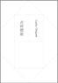
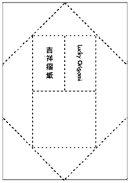

西格瑪吉祥摺紙自然健康
ς-energy Lucky Origami & Natural Health
1AUHC6wpgF676cEd8uZX6cU8BucGU4KAP7
有效期限：下載後 110日內 Expiration: 110 days after download
生命原始 Life's Original
 點擊下載 Click to download (luckyorigami.pdf.zip 9kb)
使用方法 (Chinese)

- 獲取方式：點擊下載（同樣的產品需要多份時，下載一次即可）
- 運送格式：壓縮文件ZIP，請自行解壓（附件如何開啟）
- 列印版本：須用第一次印出的版本（產品僅標誌有「吉祥摺紙」，沒任何其他標誌）
- 根據訂單的數量列印或使用相應份數（授權數量＝您購買的數量）；
- 用A4紙打印。列印時如卡紙故障，可修好後重印，以印出整張紙為第一次版本（機械、炭墨或軟件問題致打印不完整或不清晰者，不影響使用）；
- 有些打印程式裡有可選擇"縮放的百分比"，正確是 100%（實際大小）；
- 列印之後：刪除此下載文檔、電郵收件箱內文檔（如用電郵接收）和任何副本，並清空電郵和電腦的垃圾桶（以免攤薄能場）；
- 使用方法：貼身佩帶（放在貼身衣袋，或置於枕下）
- 啟用：將字朝外按步驟沿虛線反摺：1 摺四角、2 再摺四角、3 對摺二次；
- 備用：將字朝內對摺幾次，以方便攜帶；
- 使用期限：每份僅供一人使用三日，或參照相應說明。之後作廢。用後不准保存，逾期未用亦請勿保存；
- 付款方式：診金隨奉，或捷運ς摺紙定額收費，亦可參見相應收費；
- 保存期限：請在此前使用，逾期無效；
- 瞑眩反應：是正常現象，是中醫的特點。使用此方不需望聞問切，老少咸宜，適用於任何人；
- 誠心以待：尊重之，戒嬉戲和嚐試心態（心誠則靈vs海森伯測不准原理）；
- 溫馨提示：使用此方和看其他中醫只可二擇其一；
- 注意事項：詳閱就診須知，進一步說明見問題解答。
Instructions (English)
- Access : Click to download (if the same product requires multiple copies, you only need to download it once)
- Delivery format : compressed files ZIP, unzip themselves (how to open attachments)
- Print version : to be with the first printed version
- Depending on the number of copies to print or use the corresponding (authorized amount = amount of your purchase) orders.
- Printed on A4 paper. When printing such as paper jams, be repaired after reprinting the entire sheet of paper to print for the first version (mechanical, carbon black or software problems caused by incomplete or unclear print person, does not affect use).
- Some print program, there are optional "Zoom percentage," the right is 100% (actual size).
- After printing : delete this downloaded document, email the inbox document (if it is received by email) and any copy, and empt the email and the computer's trash cans (to prevent dilution of energy field).
- How to use : Usage: Take it with you (on the close of pocket, or placed under pillows), as close as possible to the body
- Enabled : The word outward fold along the dotted line in the opposite direction, step by step: 1. Fold the four corners, 2. Again fold the four corners, 3. Facing fold secondary.
- Standby : The word inward fold several times, easy to carry. Products only flags are "lucky origami", without any other signs.
- Period of use : Each printed prescription is for one person to use for 3 days, or refer to the product instruction. The prescription must be discarded after usage, or after expiration (even unused).
- Payment Method : Consultation fee is paid at your discretion, or Rapid Luck ς-energy Origami at fixed rate, or see the appropriate fee.
- Shelf life : Use before expiration.
- Ming Xuan Reaction : Is a normal phenomenon and is a feature of TCM. These are healing effects and showing positive results of the treatment . This prescription is suitable for anybody, regardless of age, and to use it, does not require any typical traditional diagnosis method, like "watching, hearing, asking and pulse taking".
- Sincerely : Respect our product, Never and Do Not use it in a playful or suspicious manner.
- Tips : User can either choose to use DuoSuccess products or other TCM product/doctor, but not both.
- Precautions : Information Need To Know, and please refer to FAQ for further information.
多成研究所
DuoSuccess Research Institute